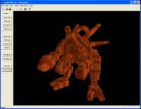

| | VSaber
Volumetric Carving ToolMakes 3D Modeling as Easy as Using MS Paint!VSaber lets you create 3D worlds with the flick of your wrist. Specifically designed so that you can just pick it up and use it with no background in 3D (or even 2D) modeling or drawing, it is possible one of the most intuitive 3D modeling program around allowing anyone from 10 year olds to veteran model designers to have a fun and productive time. More Screen Shots...
How To Use ItFirst thing you'll need is to download VSaber, then simply unzip and run! Once you run the program you will be presented with what appears to be a large purple block. Try holding down the right-mouse-button to rotate and spin the block into a different position. Now holding down the left mouse button, drawing a line around one of the corners. You will notice that as you draw the line, you cut a whole right through the object. Try cutting a line the whole way around one of the corners. When you let go of the mouse button, if you have made a clean cut, that corner of the object will vanish due to being cut off. What happens you use the left mouse button depends on which 'saber' you currently have activated, click on the icons in the tool bar to select which saber you'd like to use (cut, put, paint, etch, solder, etc.). A listing and description of the sabers can be found here. Some sabers are also affected by the current saber width and colour which you can also find the tool bar. Try playing around with the different sabers and trying different things, you'll soon find how fun and interesting it can be to do real 3D drawings. |
DownloadVSaber_Beta.zip
Version: 0.8
Platform: .Net Framework on Windows
Usage: Unzip and run!
Note: This is the beta version, see below
|
What's with the Beta?
VSaber is still currently in beta form which means this one can do pretty much everything the final version will be able to, minus a few fancy features and running a little slower. Here is a list of the primary issues I'll clear up for the final version:
Refresh time in .Net version isn't that great due to indirect access to screen, I'll be switching to DirectDraw pretty soon. In the mean time, check out the Win32 version above to see how the frame-rate is supposed to be, thats running the same rendering/carving core as the .Net version, but has a horrible interface which doesn't give full access to VSaber's features.
Triangle export hasn't been added yet, so while you can import 3D models (OFF or raw TXT format) exporting will have to wait.
Tablet PC integration is a little behind due to performance issues dealing with high quality Ink. Next release should allow you to adjust your width during mid stroke by seeing how hard your pressing your pen against the screen.
'Stopped Line' is currently disabled due some strange bug I've yet to find. The final version will include 'Stopped Line' as well as a few more etch and solder sabers.
Oh yeah, and the display doesn't resize with the window, oops. |
Developer EditionsThese are special editions of VSaber meant for development and experimentation purposes. They lack many of the features, usability and easy-of-use that the full .Net version has, but they can be useful. VSaber_Win32.exe
Platform: Windows
Note: Uses straight Win32 and the software renderer.
|
VSaber_GLUT.exe
Platform: Windows
Requires: Make sure glut32.dll is in the same folder
or you have it installed on your system.
Note: Uses GLUT and OpenGL accelerated graphics.
Use MIDDLE MOUSE button to open menu.
|
|  |
|
| ImageSaber lets you do all sorts of amazing 3D operations using images right onto your VSaber model (ImageSaber is an integrated component of VSaber, and can be found in the 'Image Saber' menu). With it, you can paste images onto your object, carve out parts of the object based on a reference images, create a 3D model from a height map, and many such operations. Please refer to the ImageSaber manual for more information. |  |
An implicit 3D function visualizer. Lets you easily graph and view all those tricky implicit equations without having to solve for anything. Note this program uses VSaber in software rendering mode which means it can run well on systems without great graphics cards.
ImpView can now export any equation you graph to VSaber's .vsb format so you can use it naturally within VSaber. |  |
| This was the original VSaber demo before I switch to .Net, and before I even switched off of OpenGL (because the Tablet PC doesn't have a good graphics card, not because OpenGL isn't absolutely amazing in all ways). Possibly I'll go back and resurrect the hardware rendering version some time soon. |  |
ModelsHere is a collection of models that you can can try out VSaber on. Right now I'm just giving bare access to the folder, I'll add a page with screenshots and such soon. Get your hands on a fine model...
|
|


{kind=link}
{kind=link}
{kind=link}
{kind=link}